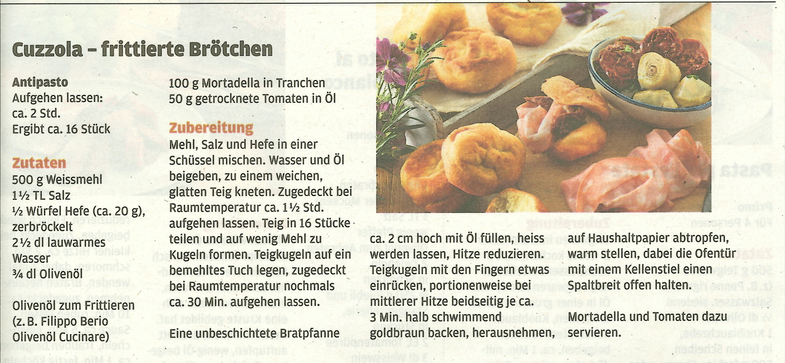

Fritierte Brötchen

Diese fritierten Brötchen sind ein leckerer und knuspriger Genuss. Perfekt als Beilage oder Snack!
Hauptgericht > Deutsche Küche
Zutaten:
- 4 Brötchen
- 1 Liter Pflanzenöl
- Salz zum Bestreuen
Zubereitung:
- Die Brötchen halbieren.
- In einem Topf das Pflanzenöl erhitzen.
- Die Brötchenhälften vorsichtig ins heiße Öl legen und goldbraun frittieren.
- Mit einem Schaumlöffel aus dem Öl nehmen und auf Küchenpapier abtropfen lassen.
- Mit Salz bestreuen und servieren.